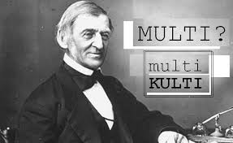

Ralpho waldo Emerson: ŻYCIE
07.10.2020 | Mikołaj Sypuła | 22:35:00
Życie
Urodził się w Bostonie. Jego ojciec, William Emerson, był znanym unitariańskim pastorem, którym później miał zostać także syn. Emerson stopniowo odchodził od filozoficznych doktryn popularnych w jego epoce, aby opracować i po raz pierwszy wyrazić filozofię transcendentalizmu w eseju Nature. Gdy Ralph miał 3 lata, ojciec narzekał, że syn nie umie jeszcze wystarczająco dobrze czytać. W 1810 roku zmarł ojciec 8-letniego wtedy chłopca. W październiku 1817 roku Emerson, w wieku 14 lat, rozpoczął studia na Harvardzie i od razu został mianowany przewodniczącym studentów pierwszego roku. Pozycja ta zapewniła mu bezpłatne miejsce w akademiku. Serwując w stołówce, zmniejszył koszty wyżywienia czterokrotnie. Otrzymywał stypendium. Nieznacznie dorabiał, asystując i ucząc podczas ferii zimowych w szkole u swojego wuja w Waltham. Po ukończeniu Harvardu w 1821 roku pomagał bratu w szkole (założonej w domu matki) dla młodych kobiet. Po wyjeździe brata na studia teologiczne do Getyngi, Emerson kontynuował zajmowanie się szkołą. Przez kolejne lata był tam nauczycielem. Potem przeniósł się na wydział teologiczny Harvardu, a w 1829 roku rozpoczął działalność jako unitariański pastor. Spór z przedstawicielami Kościoła na temat publicznych modlitw i udzielania komunii doprowadził Emersona do rezygnacji z członkostwa w 1832 roku. Rok wcześniej, w kwietniu 1831 roku zmarła jego młoda żona, najprawdopodobniej jedyna prawdziwa miłość – Elena Louisa Tucker. W 1832 roku Emerson zwiedził Europę. Swoją podróż opisał w English Traits (1856). Podczas wycieczki spotkał Wordswortha, Coleridge'a, Johna S. Milla i Thomasa Carlyle'a, z którym korespondował aż do śmierci. W 1835 roku Emerson kupił dom w Concord. Szybko stał się poważanym obywatelem miasta. Poślubił tam swoją drugą żonę Lydię Jackson. We wrześniu 1836 roku Emerson wraz z dzielącymi jego poglądy intelektualistami założył Klub Transcendentalistów. Pierwsze czasopismo klub wydał w lipcu 1840 roku. Emerson swój pierwszy esej Nature opublikował anonimowo we wrześniu 1836 roku. W momencie kiedy stał się on fundamentem transcendentalizmu, wiele osób uważało go za dzieło swedenborgianizmu. W 1838 roku Emerson został ponownie zaproszony na wydział teologiczny Harvardu, aby przemówić podczas wręczania dyplomów. Jego spostrzeżenia oburzyły establishment i przeraziły społeczność protestancką, gdyż w swojej mowie stwierdził, iż Jezus Chrystus był wielkim człowiekiem, ale nie Bogiem. Jego wstrząsające wystąpienie spowodowało, iż został oskarżony o ateizm oraz zatruwanie umysłów młodych ludzi. Pomimo wrzasku krytyków nie udzielił żadnej odpowiedzi, pozostawiając obronę wygłoszonego poglądu innym. Nie został zaproszony do Harvardu przez następne 40 lat. W połowie lat 80. XIX wieku jego stanowisko stało się standardową doktryną unitarianizmu. W 1842 roku umarł na szkarlatynę jego pierworodny syn Waldo. Emerson wyraził swój żal po tej stracie w dwóch głównych pracach: w poemacie Threnody i eseju Experience. Emerson pozostał znanym prelegentem i wykładowcą. Prowadził swoją działalność głównie w Nowej Anglii. Podczas paru nieobecności Emersona na zaplanowanych wystąpieniach zastępował go Frederick Douglass. Emerson przemawiał na bardzo zróżnicowany zakres tematów. Wiele jego esejów powstawało na bazie wygłoszonych wcześniej prelekcji oraz wykładów. Utrzymywał ścisły kontakt z Nathanielem Hawthorne'em oraz Henrym D. Thoreau. Spotykał się z nimi w Concord. Korespondował też z Adamem Mickiewiczem. Uważany był za bardzo abstrakcyjnego i trudnego pisarza, niemniej przyciągał tłumy odbiorców. Słuchacze nieraz żartowali, że kompletnie nie rozumieją, o czym Emerson mówił, ale było to coś pięknego. Jawne i bezkompromisowe poparcie Emersona dla abolicjonizmu powodowało protesty oraz drwiny ze strony tłumów. Jako indywidualista usilnie starał się nie wchodzić na publiczną arenę poprzez uczestnictwo w jakimś ruchu bądź konkretnym ugrupowaniu. Podkreślał, iż nie pragnie mieć wyznawców, lecz jedynie naśladowców, którzy tak jak on będą pobudzeni do samodzielnego myślenia. Poproszony o podsumowanie ostatnich lat swojego nauczania odpowiedział, że za najważniejszą uznaje prawdę o "bezmiarze każdego człowieka". Emerson zmarł w 1882 roku i został pochowany w Concord.